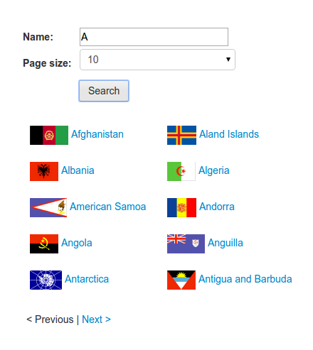
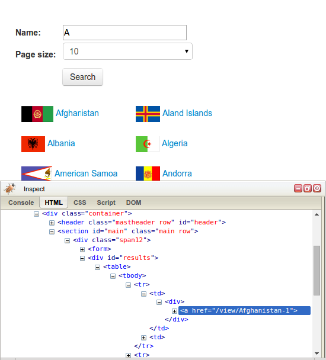
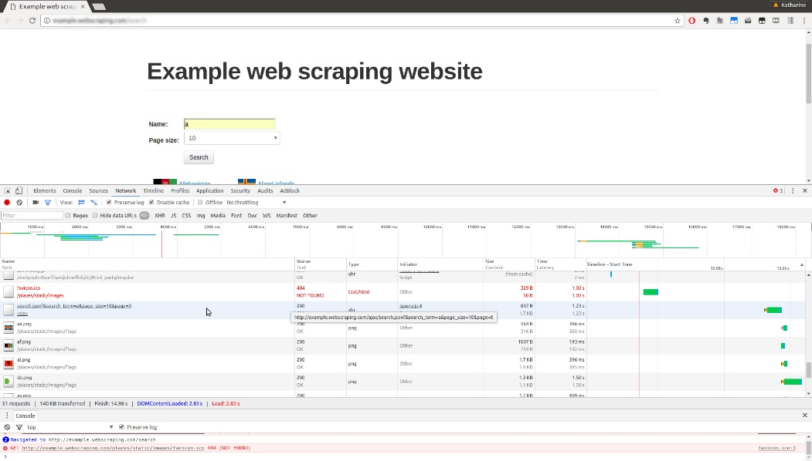
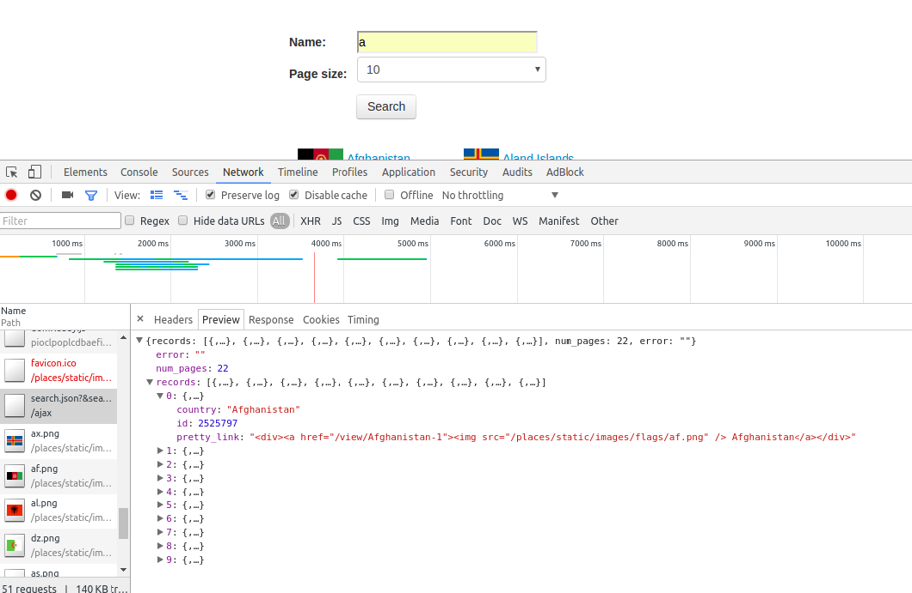
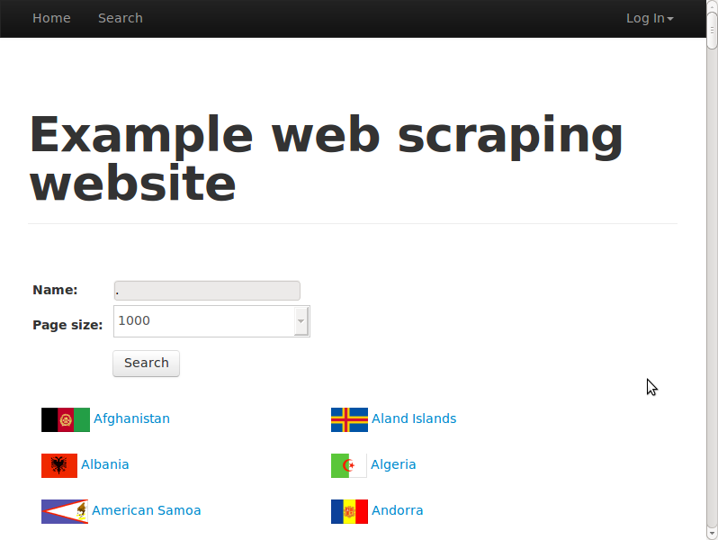

第5章 动态内容
根据联合国2006年的一项研究，73%的主流网站都在其重要功能中依赖JavaScript。诸如React、AngularJS、Ember、Node等使用JavaScript的模型-视图-控制器（MVC）框架的增长与流行，更加提高了JavaScript作为网页内容主流引擎的重要性。
和单页面应用的简单表单事件不同，使用JavaScript时，不再是加载后立即下载页面全部内容。这种架构会造成许多网页在浏览器中展示的内容可能不会出现在HTML源代码中，我们在前面介绍的抓取技术也就无法抽取网站的重要信息了。
对于这种动态的JavaScript网站，本章将会介绍两种抓取其数据的方法，分别是：
- JavaScript逆向工程；
- 渲染JavaScript。
5.1 动态网页示例
让我们来看一个动态网页的例子。示例网站有一个搜索表单，可以通过http://example.python-scraping.com/search进行访问，该页面用于查询国家（或地区）。比如说，我们想要查找所有起始字母为A的国家（或地区），其搜索结果页面如图5.1所示。

图5.1
如果我们右键单击结果部分，使用浏览器工具查看元素（参见第2章），可以发现结果被存储在ID为“result”的div元素之中，如图5.2所示。
让我们尝试使用lxml模块抽取这些结果，这里用到的知识在第2章和第3章的Downloader类中都已经介绍过了。
>>> from lxml.html import fromstring
>>> from downloader import Downloader
>>> D = Downloader()
>>> html = D('http://example.python-scraping.com/search')
>>> tree = fromstring(html)
>>> tree.cssselect('div#results a')
[]

图5.2
这个示例爬虫在抽取结果时失败了。检查网页源代码（通过使用鼠标右键单击View Page Source选项，而不是使用浏览器工具）可以帮助我们了解抽取操作为什么会失败。在源代码中，可以发现我们准备抓取的div元素实际上是空的，如下所示。
<div id="results">
</div>
而浏览器工具显示给我们的却是网页的当前状态，在本例中就是使用JavaScript动态加载完搜索结果之后的网页。下一节中，我们将使用浏览器工具的另一个功能来了解这些结果是如何加载的。
 什么是AJAX
什么是AJAX
AJAX指异步JavaScript和XML（Asynchronous JavaScript and XML），于2005年引入，描述了一种跨浏览器动态生成Web应用内容的功能。更重要的是，XMLHttpRequest——这个最初微软为ActiveX实现的JavaScript对象，目前已经得到大多数浏览器的支持。该技术允许JavaScript创建到远程服务器的HTTP请求并获得响应，也就是说Web应用可以传输和接收数据。而以前客户端与服务端交互的方式则是刷新整个网页，这种方式的用户体验比较差，并且在只需传输少量数据时会造成带宽浪费。
Google的Gmail和地图站点是动态Web应用的早期实验者，也对AJAX成为主流起到了重要的帮助作用。
5.2 对动态网页进行逆向工程
到目前为止，我们抓取网页数据使用的都是第2章中介绍的方法。该方法在本章的示例网页中无法正常运行，因为该网页中的数据是使用JavaScript动态加载的。要想抓取该数据，我们需要了解网页是如何加载该数据的，该过程也可以描述为逆向工程。继续上一节的例子，在浏览器工具中单击Network选项卡，然后执行一次搜索，我们将会看到对于给定页面的所有请求。
请求太多了！当我们滚动这些请求时，可以看到请求主要都是图片（加载的旗帜），然后我们会发现一个有意思的名字：search.json，其路径为/ajax，如图5.3所示。
如果我们使用Chrome点击该URL，可以看到更多细节（所有主流浏览器都有类似功能，因此即使你看到的外观可能有所不同，但主要的功能是相似的）。当我们点击感兴趣的URL时，可以看到更多细节，包括以解析形式向我们展示响应的预览。
这里与Elements选项卡中的Inspect Element视图类似，我们可以使用箭头展开预览，此时可以看到结果中的每个国家（或地区）都包含在JSON格式中，如图5.4所示。

图5.3

图5.4
我们也可以通过右键单击的方式直接在新标签页中打开该URL。当你这样操作时，会发现它就是一个简单的JSON响应。这个AJAX数据不仅可以在Network选项卡或浏览器中访问到，也可以直接下载，如下面的代码所示。
>>> import requests
>>> resp =
requests.get('http://example.python-scraping.com/ajax/search.json?page=0&page_s
ize=10&search_term=a')
>>> resp.json()
{'error': '',
'num_pages': 21,
'records': [{'country_or_district': 'Afghanistan',
'id': 1261,
'pretty_link': '<div><a href="/view/Afghanistan-1"><img
src="/places/static/images/flags/af.png" />Afghanistan</a></div>'},
...]
}
从前面的代码中可以看出，requests库可以让我们通过json方法，以Python字典的形式访问JSON响应。我们也可以下载原始字符串响应，然后使用json.loads方法进行加载。
我们的代码为我们提供了一个简单的方法来抓取包含字母A的国家（或地区）。要想获取所有国家（或地区）的信息，我们需要对字母表中的每个字母调用一次AJAX搜索。而且对于每个字母，搜索结果还会被分割成多个页面，实际页数和请求时的page_size相关。
不过，我们不能保存所有返回的结果，因为同一个国家（或地区）可能会在多次搜索时返回，比如Fiji会匹配f、i、j三次搜索结果。这些重复的搜索结果需要过滤处理，这里采用的方法是在写入文本文件之前先将结果存储到集合中，因为集合这种数据类型能够确保元素唯一。
下面是其实现代码，通过搜索字母表中的每个字母，然后遍历JSON响应的结果页面，来抓取所有国家（或地区）信息。其产生的结果将会存储在简单的文本文件当中。
import requests
import string
PAGE_SIZE = 10
template_url = 'http://example.python-scraping.com/ajax/' +
'search.json?page={}&page_size={}&search_term={}'
countries_or_districts = set()
for letter in string.ascii_lowercase:
print('Searching with %s' % letter)
page = 0
while True:
resp = requests.get(template_url.format(page, PAGE_SIZE, letter))
data = resp.json()
print('adding %d more records from page %d' %
(len(data.get('records')), page))
for record in data.get('records'):
countries.add(record['country_or_district'])
page += 1
if page >= data['num_pages']:
break
with open('../data/countries_or_districts.txt', 'w') as countries_or_districts_ file:
countries_or_districts_file.write('n'.join(sorted(countries_or_districts)))
当你运行该代码时，将会看到不断前行的输出。
$ python chp5/json_scraper.py
Searching with a
adding 10 more records from page 0
adding 10 more records from page 1
...
当脚本执行完成时，相对目录../data/下的countries_or_ districts.txt文件中，将会显示一个排序的国家（或地区）名称列表。你可能还会注意到，页面长度可以使用全局变量PAGE_SIZE设置。你可能需要尝试修改它，以增加或减少请求数。
该AJAX爬虫提供的抽取国家（或地区）信息的方法，比第2章中介绍的传统的逐页抓取方式更简单。这其实是一个日常经验：依赖于AJAX的网站虽然乍看起来更加复杂，但是其结构促使数据和表现层分离，因此我们在抽取数据时会更加容易。如果你发现一个网站拥有类似该示例站点的开放应用编程接口（API），那么你就可以只抓取其API，而无须再使用CSS选择器和XPath加载HTML中的数据了。
5.2.1 边界情况
前面的AJAX搜索脚本非常简单，不过我们还可以利用一些可能的边界情况使其进一步简化。目前，我们是针对每个字母执行查询操作的，也就是说我们需要执行26次单独的查询，并且这些查询结果又有很多重复。理想情况下，我们可以使用一次搜索查询就能匹配所有结果。接下来，我们将尝试使用不同字符来测试这种想法是否可行。如果将搜索条件置为空，其结果如下。
>>> url =
'http://example.python-scraping.com/ajax/search.json?page=0&page_
size=10&search_term='
>>> requests.get(url).json()['num_pages']
0
很不幸，这种方法并没有奏效，我们没有得到返回结果。下面我们再来尝试'*'是否能够匹配所有结果。
>>> requests.get(url + '*').json()['num_pages']
0
依然没有奏效。接下来我们再尝试一下'.'，这是正则表达式里用于匹配所有字符的元字符。
>>> requests.get(url + '.').json()['num_pages']
26
太好了！服务端肯定是通过正则表达式进行匹配的。因此，我们现在可以把依次搜索每个字符替换成只对点号搜索一次了。
此外，我们还可以在AJAX的URL中使用page_size这个查询字符串的值设置页面大小。网站搜索界面中包含4、10、20这几种选项，其中默认值为10。因此，提高每个页面的显示数量到最大值，可以使下载次数减半。
>>> url =
'http://example.python-scraping.com/ajax/search.json?page=0&page_
size=20&search_term=.'
>>> requests.get(url).json()['num_pages']
13
那么，要是使用比网页界面选择框支持的每页国家（或地区）数更高的数值又会怎样呢？
>>> url =
'http://example.python-scraping.com/ajax/search.json?page=0&page_
size=1000&search_term=.'
>>> requests.get(url).json()['num_pages']
1
显然，服务端并没有检查该参数是否与界面允许的选项值相匹配，而是直接在一个页面中返回了所有结果。许多Web应用不会在AJAX后端检查这一参数，因为它们认为所有API请求只会来自Web界面。
现在，我们手工修改了这个URL，使其能够在一次请求中下载得到所有国家（或地区）的数据。下面是更新后进一步简化的实现，在该实现中数据将被保存到CSV文件当中。
from csv import DictWriter
import requests
PAGE_SIZE = 1000
template_url = 'http://example.python-scraping.com/ajax/' +
'search.json?page=0&page_size={}&search_term=.'
resp = requests.get(template_url.format(PAGE_SIZE))
data = resp.json()
records = data.get('records')
with open('../data/countries_or_districts.csv', 'w') as countries_or_districts_ file:
wrtr = DictWriter(countries_or_districts_file, fieldnames=records[0].keys())
wrtr.writeheader()
wrtr.writerows(records)
5.3 渲染动态网页
对于搜索网页这个例子，我们能够快速地对API的方法进行逆向工程来了解它如何工作，以及如何使用它在一个请求中获取结果。但是，一些网站非常复杂，即使使用高级的浏览器工具也很难理解。比如，一个网站使用Google Web Toolkit（GWT）开发，那么它产生的JavaScript代码是机器生成的压缩版。生成的JavaScript代码虽然可以使用类似JS beautifier的工具进行还原，但是其产生的结果过于冗长，而且原始的变量名也已经丢失，这就使其难以理解，难以实施逆向工程。
此外，更高级的框架（比如React.js以及其他基于Node.js的工具）可以进一步抽象已经很复杂的JavaScript逻辑，混淆数据和变量名称，并添加更多的API请求安全层（使用cookie、浏览器会话以及时间戳，或使用其他防爬技术）。
尽管经过足够的努力，任何网站都可以被逆向工程，不过我们可以使用浏览器渲染引擎避免这些工作，这种渲染引擎是浏览器在显示网页时解析HTML、应用CSS样式并执行JavaScript语句的部分。在本节中，我们将使用WebKit渲染引擎，通过Qt框架可以获得该引擎的一个便捷Python接口。
 什么是WebKit？
什么是WebKit？
WebKit的代码源于1998年的KHTML项目，当时它是Konqueror浏览器的渲染引擎。2001年，苹果公司将该代码衍生为WebKit，并应用于Safari浏览器。Google在Chrome 27之前的版本也使用了WebKit内核，直到2013年转向利用WebKit开发的Blink内核。Opera在2003年到2012年间使用的是其内部的Presto渲染引擎，之后切换到WebKit，但是不久又跟随Chrome转向Blink。其他主流渲染引擎还包括IE使用的Trident和Firefox的Gecko。
5.3.1 PyQt还是PySide
Qt框架有两种可以使用的Python库，分别是PyQt和PySide。PyQt最初于1998年发布，但在用于商业项目时需要购买许可。由于该原因，开发Qt的公司（原先是诺基亚，现在是Digia）后来在2009年开发了另一个Python库PySide，并且使用了更加宽松的LGPL许可。
虽然这两个库有少许区别，但是本章中的例子在两个库中都能够正常工作。下面的代码片段用于导入已安装的任何一种Qt库。
try:
from PySide.QtGui import *
from PySide.QtCore import *
from PySide.QtWebKit import *
except ImportError:
from PyQt4.QtGui import *
from PyQt4.QtCore import *
from PyQt4.QtWebKit import *
在这段代码中，如果PySide不可用，则会抛出ImportError异常，然后导入PyQt模块。如果PyQt模块也不可用，则会抛出另一个ImportError异常，然后退出脚本。

下载和安装这两种Qt库Python版本的说明可以分别参考网上的相应介绍。对于你正在使用的Python 3的版本，可能存在没有对应库的情况，不过其发布很频繁，因此你可以经常回来查看一下。
1．使用Qt进行调试
无论你使用的是PySide还是PyQt，可能都会遇到需要调试应用或脚本的网站。我们已经介绍了一种方式可以实现该目的，就是通过使用QWebView这个GUI的show()方法来“查看”你加载的页面上渲染了什么。你也可以使用page().mainFrame().toHtml()链（在任何时刻使用BrowserRender类通过html方法拉取HTML时均可以很容易地引用），将其写入文件中保存下来，然后在浏览器中打开。
此外，还有一些有用的Python调试器，比如pdb，你可以将它集成到脚本中，然后使用断点单步执行可能存在错误、问题或bug的代码。针对不同库和你安装的Qt版本的不同，有一些不同的设置方式，因此我们建议搜索你的确切设置，并复查实现，以允许设置断点或跟踪。
5.3.2 执行JavaScript
为了确认你安装的WebKit能够执行JavaScript，我们可以使用位于http://example.python-scraping.com/dynamic上的这个简单示例。
该网页只是使用JavaScript在div元素中写入了Hello World。下面是其源代码。
<html>
<body>
<div id="result"></div>
<script>
document.getElementById("result").innerText = 'Hello World';
</script>
</body>
</html>
使用传统方法下载原始HTML并解析结果时，得到的div元素为空值，如下所示。
>>> import lxml.html
>>> from chp3.downloader import Downloader
>>> D = Downloader()
>>> url = 'http://example.python-scraping.com/dynamic'
>>> html = D(url)
>>> tree = lxml.html.fromstring(html)
>>> tree.cssselect('#result')[0].text_content()
''
下面是使用WebKit的初始版本代码，当然还需事先导入上一节中提到的PyQt或PySide模块。
>>> app = QApplication([])
>>> webview = QWebView()
>>> loop = QEventLoop()
>>> webview.loadFinished.connect(loop.quit)
>>> webview.load(QUrl(url))
>>> loop.exec_()
>>> html = webview.page().mainFrame().toHtml()
>>> tree = lxml.html.fromstring(html)
>>> tree.cssselect('#result')[0].text_content()
'Hello World'
因为这里有很多新知识，所以下面我们会逐行分析这段代码。
- 第一行初始化了
QApplication对象，在其他Qt对象可以初始化之前，需要先有Qt框架。
- 接下来，创建
QWebView对象，该对象是Web文档的构件。
- 创建
QEventLoop对象，该对象用于创建本地事件循环。
QWebView对象的loadFinished回调链接了QEventLoop的quit方法，从而可以在网页加载完成之后停止事件循环。然后，再将要加载的URL传给QWebView。PyQt需要将该URL字符串封装到QUrl对象当中，而对于PySide来说则是可选项。- 由于
QWebView是异步加载的，因此执行过程会在网页加载时立即传入下一行。但我们又希望等待网页加载完成，因此需要在事件循环启动时调用loop.exec_()。
- 网页加载完成后，事件循环退出，代码执行继续，对加载得到网页所产生的HTML使用
toHTML方法执行抽取。
- 从最后一行可以看出，我们成功执行了该JavaScript，
div元素抽取出了Hello World。
这里使用的类和方法在C++的Qt框架网站中都有详细的文档，读者可自行参考。虽然PyQt和PySide都有其自身的文档，但是原始C++版本的描述和格式更加详尽，一般的Python开发者可以用它替代。
5.3.3 使用WebKit与网站交互
我们用于测试的搜索网页需要用户修改后提交搜索表单，然后单击页面链接。而前面介绍的浏览器渲染引擎只能执行JavaScript，然后访问生成的HTML。要想抓取搜索页面，我们还需要对浏览器渲染引擎进行扩展，使其支持交互功能。幸运的是，Qt包含了一个非常棒的API，可以选择和操纵HTML元素，使实现变得简单。
对于之前的AJAX搜索示例，下面给出另一个实现版本，该版本已经将搜索条件设为'.'，每页显示数量设为'1000'，这样只需一次请求就能获取到全部结果。
app = QApplication([])
webview = QWebView()
loop = QEventLoop()
webview.loadFinished.connect(loop.quit)
webview.load(QUrl('http://example.python-scraping.com/search'))
loop.exec_()
webview.show()
frame = webview.page().mainFrame()
frame.findFirstElement('#search_term').
setAttribute('value', '.')
frame.findFirstElement('#page_size option:checked').
setPlainText('1000')
frame.findFirstElement('#search').
evaluateJavaScript('this.click()')
app.exec_()
最开始几行和之前的Hello World示例一样，初始化了一些用于渲染网页的Qt对象。之后，调用QWebView GUI的show()方法来显示渲染窗口，这样可以方便调试。然后，创建了一个指代框架的变量，可以让后面几行代码更短。
QWebFrame类有很多与网页交互的有用方法。包含findFirstElement的3行使用CSS选择器在框架中定位元素，然后设置搜索参数。而后表单使用evaluateJavaScript()方法进行提交，模拟点击事件。该方法非常实用，因为它允许我们插入并执行任何我们提交的JavaScript代码，包括直接调用网页中定义的JavaScript方法。最后一行进入应用的事件循环，此时我们可以对表单操作进行复查。如果没有使用该方法，脚本将会直接退出。
图5.5所示为脚本运行时的显示界面。

图5.5
代码最后一行中，我们运行了app._exec()，它是一个阻塞调用，可以防止任何其他代码行在该线程中执行。通过使用webkit.show()查看你的代码如何运转，是调试应用以及确定网页上实际发生了什么的很好的方式。
如果想要停止应用运行，只需关闭Qt窗口（或Python解释器）即可。
1．等待结果
实现WebKit爬虫的最后一部分是抓取搜索结果，而这又是最难的一部分，因为我们难以预估完成AJAX事件以及国家（或地区）数据加载完成的时间。有三种方法可以处理该难题，分别是：
- 等待一定时间，期望AJAX事件能够在此之前完成；
- 重写Qt的网络管理器，跟踪URL请求的完成时间；
- 轮询网页，等待特定内容出现。
第一种方案最容易实现，不过效率也最低，因为一旦设置了安全的超时时间，就会使脚本花费过多时间等待。而且，当网络速度比平常慢时，固定的超时时间会出现请求失败的情况。第二种方案虽然更加高效，但如果是客户端延时，则无法使用。比如，已经完成下载，但是需要再单击一个按钮才会显示内容这种情况，延时就出现在客户端。第三种方案尽管存在一个小缺点，即会在检查内容是否加载完成时浪费CPU周期，但是该方案更加可靠且易于实现。下面是使用第三种方案的实现代码。
>>> elements = None
>>> while not elements:
... app.processEvents()
... elements = frame.findAllElements('#results a')
...
>>> countries = [e.toPlainText().strip() for e in elements]
>>> print(countries_or_districts)
['Afghanistan', 'Aland Islands', ... , 'Zambia', 'Zimbabwe']
如上实现中，代码将停留在while循环中，直到国家（或地区）链接出现在results这个div元素中。每次循环，都会调用app.processEvents()，用于给Qt事件循环执行任务的时间，比如响应点击事件和更新GUI。我们还可以在该循环中添加一个短时间的sleep，以便CPU间歇休息。
本示例的完整代码位于本书源码文件的chp5文件夹中，其名为pyqt_search.py。
5.4 渲染类
为了提升这些功能后续的易用性，下面会把使用到的方法封装到一个类中，其源代码可以从本书源码文件的chp5文件夹中找到，其名为browser_render.py。
import time
class BrowserRender(QWebView):
def __init__(self, show=True):
self.app = QApplication(sys.argv)
QWebView.__init__(self)
if show:
self.show() # show the browser
def download(self, url, timeout=60):
"""Wait for download to complete and return result"""
loop = QEventLoop()
timer = QTimer()
timer.setSingleShot(True)
timer.timeout.connect(loop.quit)
self.loadFinished.connect(loop.quit)
self.load(QUrl(url))
timer.start(timeout * 1000)
loop.exec_() # delay here until download finished
if timer.isActive():
# downloaded successfully
timer.stop()
return self.html()
else:
# timed out
print 'Request timed out: ' + url
def html(self):
"""Shortcut to return the current HTML"""
return self.page().mainFrame().toHtml()
def find(self, pattern):
"""Find all elements that match the pattern"""
return self.page().mainFrame().findAllElements(pattern)
def attr(self, pattern, name, value):
"""Set attribute for matching elements"""
for e in self.find(pattern):
e.setAttribute(name, value)
def text(self, pattern, value):
"""Set attribute for matching elements"""
for e in self.find(pattern):
e.setPlainText(value)
def click(self, pattern):
"""Click matching elements"""
for e in self.find(pattern):
e.evaluateJavaScript("this.click()")
def wait_load(self, pattern, timeout=60):
"""Wait until pattern is found and return matches"""
deadline = time.time() + timeout
while time.time() < deadline:
self.app.processEvents()
matches = self.find(pattern)
if matches:
return matches
print('Wait load timed out')
你可能已经注意到，在download()和wait_load()方法中增加了一些代码用于处理定时器。定时器用于跟踪等待时间，并在截止时间到达时取消事件循环。否则，当出现网络问题时，事件循环就会无休止地运行下去。
下面是使用这个新实现的类抓取搜索页面的代码。
>>> br = BrowserRender()
>>> br.download('http://example.python-scraping.com/search')
>>> br.attr('#search_term', 'value', '.')
>>> br.text('#page_size option:checked', '1000')
>>> br.click('#search')
>>> elements = br.wait_load('#results a')
>>> countries_or_districts = [e.toPlainText().strip() for e in elements]
>>> print countries_or_districts
['Afghanistan', 'Aland Islands', ... , 'Zambia', 'Zimbabwe']
5.4.1 Selenium
使用前面小节中的WebKit库，我们可以自定义浏览器渲染引擎，这样就能完全控制想要执行的行为。如果不需要这么高的灵活性，那么还有一个不错的更容易安装的替代品Selenium可以选择，它提供的API接口可以自动化处理多个常见浏览器。Selenium可以通过如下命令使用pip安装。
pip install selenium
为了演示Selenium是如何运行的，我们会把之前的搜索示例重写成Selenium的版本。首先，创建一个到浏览器的连接。
>>> from selenium import webdriver
>>> driver = webdriver.Firefox()
当该命令运行时，会弹出一个空的浏览器窗口。不过如果你得到了错误信息，则可能需要安装geckodriver（https://github.com/mozilla/geckodriver/releases），并确保它在你的PATH变量中可用。
使用浏览器可以看到页面并进行交互（而不是Qt组件），这个功能非常方便，因为在执行每条命令时，都可以通过浏览器窗口来检查脚本是否依照预期运行。尽管这里我们使用的浏览器是Firefox，不过Selenium也提供了连接其他常见浏览器的接口，比如Chrome和IE。需要注意的是，我们只能使用系统中已安装浏览器的Selenium接口。

如果你想了解Selenium是否支持你系统中的浏览器，以及你可能需要安装的其他依赖或驱动，请查阅Selenium文档中关于支持平台的介绍。
如果想在选定的浏览器中加载网页，可以调用get()方法。
>>> driver.get('http://example.python-scraping.com/search')
然后，设置需要选取的元素，这里使用的是搜索文本框的ID。此外，Selenium也支持使用CSS选择器或XPath来选取元素。当找到搜索文本框之后，我们可以通过send_keys()方法输入内容，模拟键盘输入。
>>> driver.find_element_by_id('search_term').send_keys('.')
为了让所有结果可以在一次搜索后全部返回，我们希望把每页显示的数量设置为1000。但是，由于Selenium的设计初衷是与浏览器交互，而不是修改网页内容，因此这种想法并不容易实现。要想绕过这一限制，我们可以使用JavaScript语句直接设置选项框的内容。
>>> js = "document.getElementById('page_size').options[1].text = '1000';"
>>> driver.execute_script(js)
此时表单内容已经输入完毕，下面就可以单击搜索按钮执行搜索了。
>>> driver.find_element_by_id('search').click()
我们需要等待AJAX请求完成之后才能加载结果，在之前讲解的WebKit实现中这里是最难的一部分脚本。不过幸运的是，Selenium为该问题提供了一个简单的解决方法，那就是可以通过implicitly_wait()方法设置超时时间。
>>> driver.implicitly_wait(30)
此处，我们设置了30秒的延时。如果我们要查找的元素没有出现，Selenium至多等待30秒，然后就会抛出异常。Selenium还允许使用显式等待进行更详细的轮询控制。
要想选取国家（或地区）链接，我们依然可以使用WebKit示例中用过的那个CSS选择器。
>>> links = driver.find_elements_by_css_selector('#results a')
然后，抽取每个链接的文本，并创建一个国家（或地区）列表。
>>> countries_or_districts = [link.text for link in links]
>>> print(countries_or_districts)
['Afghanistan', 'Aland Islands', ... , 'Zambia', 'Zimbabwe']
最后，调用close()方法关闭浏览器。
>>> driver.close()
本示例的源代码位于本书源码文件的chp5文件夹中，其名为selenium_search.py。如果想进一步了解Selenium这个Python库，可以通过https://selenium-python.readthedocs.org/获取其文档。
1．Selenium与无界面浏览器
尽管通过常见浏览器安装和使用Selenium相当方便、容易，但是在服务器上运行这些脚本时则会出现问题。对于服务器而言，更常使用的是无界面浏览器。它们往往也比功能完整的Web浏览器更快且更具可配置性。
本书出版时最流行的无界面浏览器是PhantomJS。它通过自身的基于JavaScript的WebKit引擎运行。PhantomJS可以在大多数服务器中很容易地进行安装，并且可以遵照最新的下载说明在本地安装。
在Selenium中使用PhantomJS只需要进行一个不同的初始化。
>>> from selenium import webdriver
>>> driver = webdriver.PhantomJS() # note: you should use the phantomjs
executable path here
# if you see an error (e.g.
PhantomJS('/Downloads/pjs'))
你能注意到的第一个区别是此时不会打开浏览器窗口，但是已经有PhantomJS实例在运行。要想测试我们的代码，可以访问一个页面并进行截图。
>>> driver.get('http://python.org')
>>> driver.save_screenshot('../data/python_website.png')
True
现在当你打开保存的PNG文件时，可以看到PhantomJS浏览器渲染的结果，如图5.6所示。
图5.6
我们注意到这是一个长窗口。我们可以通过使用maximize_window或通过set_window_size设置窗口大小对其进行改变，无论哪种用法都已经在Selenium Python documentation on the WebDriver API中进行了详细的文档说明。
对于任何Selenium问题的调试来说，截图功能都是很有用的，即使是在你对真实浏览器使用Selenium时——有时候因为一些页面加载缓慢，或是网站的页面结构或JavaScript发生变化，可能会导致脚本运行失败。当发生错误时正好有页面的截图则会非常有帮助。此外，你可以使用驱动的page_source属性保存或查看当前页面的源代码。
使用类似Selenium这样基于浏览器的解析器的另一个原因是，它表现得更加不像爬虫。一些网站使用类似蜜罐的防爬技术，在该网站的页面上可能会包含隐藏的有毒链接，当你通过脚本点击它时，将会使你的爬虫被封禁。对于这类问题，由于Selenium基于浏览器的架构，因此可以成为更加强大的爬虫。当你不能在浏览器中点击或看到一个链接时，你也无法通过Selenium与其进行交互。此外，你的头部将包含你使用的确切浏览器，而且你还可以使用正常浏览器的功能，比如cookie、会话以及加载图片和交互元素，这些功能有时需要加载特定的表单或页面。如果你的爬虫必须与页面进行交互，并且行为需要更加“类似人类”，那么Selenium是一个不错的选择。
5.5 本章小结
本章介绍了两种抓取动态网页数据的方法。第一种方法是使用浏览器工具对动态网页进行逆向工程，第二种方法是使用浏览器渲染引擎为我们触发JavaScript事件。我们首先使用WebKit创建自定义浏览器，然后使用更高级的Selenium框架重新实现该爬虫。
浏览器渲染引擎能够为我们节省了解网站后端工作原理的时间，但是该方法也有一些劣势。渲染网页增加了开销，使其比单纯下载HTML或使用API调用更慢。另外，使用浏览器渲染引擎的方法通常需要轮询网页来检查是否已经加载生成的HTML，这种方式非常脆弱，在网络较慢时会经常失败。
我一般将浏览器渲染引擎作为短期解决方案，此时长期的性能和可靠性并不算重要；而作为长期解决方案，我会尝试对网站进行逆向工程。当然，一些网站可能需要“类似人类”的交互或是拥有封闭的API，此时就意味着浏览器实现很可能是获取内容的唯一途径了。
在下一章中，我们将介绍如何与表单进行交互，以及如何使用cookie登录网站并编辑内容。